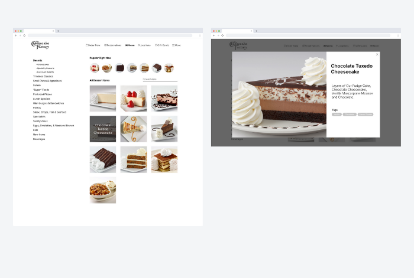
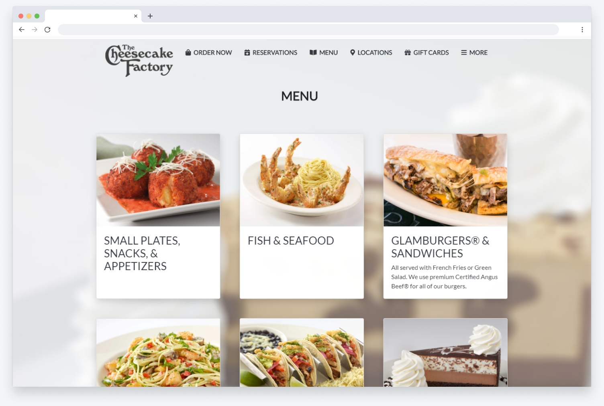
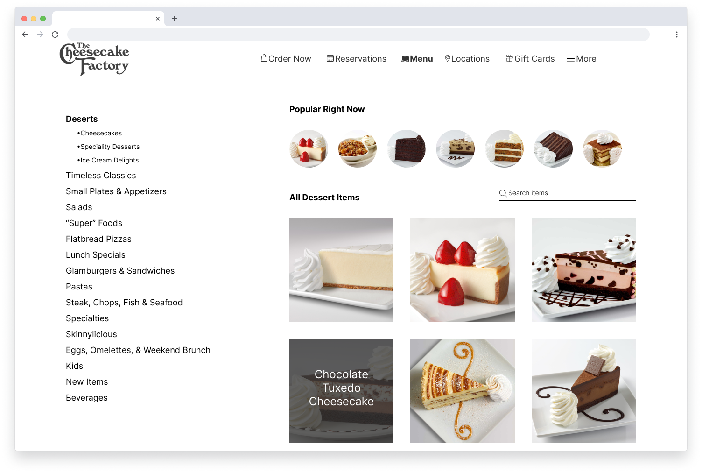

Cheesecake Factory Online Menu Redesign
A more human-centered design of The Cheesecake Factory's online menu
Overview
This was a personal 1-week project in which the challenge was to redesign the layout of a website to better suit a particular audience's needs. I chose to redesign The Cheesecake Factory's online menu since I find myself using the menu frequently for ordering food, and found that the interface was not well-designed in terms of presenting information architecture. I researched more human-centered graphic layouts and information architectures, created Figma mockups, and coded the redesigned menu webpages.
Role: User Researcher, UI Designer, Frontend Developer
Duration: 1 week
Tools used: Figma, HTML5, CSS3
UX Research
According to an article by the Nielson Norman Group on information architecture and flat vs. deep website hierarchies, content is more discoverable when not nested within many layers. The current online menu layout for The Cheesecake Factory contains numerous items nested under many different layers. This results in the user needing to click many times in order to reach important information on every item (such as images and food descriptions). Since the webpage is a horizontal space, the vertical list-structured menu creates visual conflict since it does not utilize the remaining space effectively.
UI Design
To implement a solution for both visual design and improved user experience, the redesign for the menu layout uses a grid layout instead of the list-based information architecture on the curent website. This layout provides images and summarizes important information for each item without the user needing to scroll or click numerous times. In addition, users can compare multiple items without scrolling as much. After planning the information architecture, the project was prototyped in Figma and then implemented with HTML and CSS code into an interactive website.
Redesign: Wireframe & Mockups
  Key takeaways
- I learned the importance of how user data plays a role in ideating
- I sharpened my design skills and learned Figma
- I became more familiar with the iterative design process